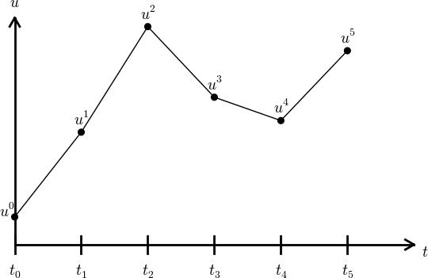
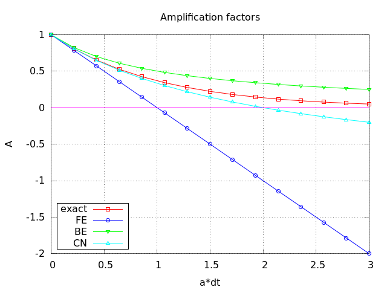

$$
\newcommand{\uex}{{u_{\small\mbox{e}}}}
\newcommand{\uexd}[1]{{u_{\small\mbox{e}, #1}}}
\newcommand{\vex}{{v_{\small\mbox{e}}}}
\newcommand{\vexd}[1]{{v_{\small\mbox{e}, #1}}}
\newcommand{\Aex}{{A_{\small\mbox{e}}}}
\newcommand{\half}{\frac{1}{2}}
\newcommand{\halfi}{{1/2}}
\newcommand{\tp}{\thinspace .}
\newcommand{\Ddt}[1]{\frac{D #1}{dt}}
\newcommand{\E}[1]{\hbox{E}\lbrack #1 \rbrack}
\newcommand{\Var}[1]{\hbox{Var}\lbrack #1 \rbrack}
\newcommand{\Std}[1]{\hbox{Std}\lbrack #1 \rbrack}
\newcommand{\xpoint}{\boldsymbol{x}}
\newcommand{\normalvec}{\boldsymbol{n}}
\newcommand{\Oof}[1]{\mathcal{O}(#1)}
\newcommand{\x}{\boldsymbol{x}}
\newcommand{\X}{\boldsymbol{X}}
\renewcommand{\u}{\boldsymbol{u}}
\renewcommand{\v}{\boldsymbol{v}}
\newcommand{\w}{\boldsymbol{w}}
\newcommand{\V}{\boldsymbol{V}}
\newcommand{\e}{\boldsymbol{e}}
\newcommand{\f}{\boldsymbol{f}}
\newcommand{\F}{\boldsymbol{F}}
\newcommand{\stress}{\boldsymbol{\sigma}}
\newcommand{\strain}{\boldsymbol{\varepsilon}}
\newcommand{\stressc}{{\sigma}}
\newcommand{\strainc}{{\varepsilon}}
\newcommand{\I}{\boldsymbol{I}}
\newcommand{\T}{\boldsymbol{T}}
\newcommand{\dfc}{\alpha} % diffusion coefficient
\newcommand{\ii}{\boldsymbol{i}}
\newcommand{\jj}{\boldsymbol{j}}
\newcommand{\kk}{\boldsymbol{k}}
\newcommand{\ir}{\boldsymbol{i}_r}
\newcommand{\ith}{\boldsymbol{i}_{\theta}}
\newcommand{\iz}{\boldsymbol{i}_z}
\newcommand{\Ix}{\mathcal{I}_x}
\newcommand{\Iy}{\mathcal{I}_y}
\newcommand{\Iz}{\mathcal{I}_z}
\newcommand{\It}{\mathcal{I}_t}
\newcommand{\If}{\mathcal{I}_s} % for FEM
\newcommand{\Ifd}{{I_d}} % for FEM
\newcommand{\Ifb}{{I_b}} % for FEM
\newcommand{\setb}[1]{#1^0} % set begin
\newcommand{\sete}[1]{#1^{-1}} % set end
\newcommand{\setl}[1]{#1^-}
\newcommand{\setr}[1]{#1^+}
\newcommand{\seti}[1]{#1^i}
\newcommand{\sequencei}[1]{\left\{ {#1}_i \right\}_{i\in\If}}
\newcommand{\basphi}{\varphi}
\newcommand{\baspsi}{\psi}
\newcommand{\refphi}{\tilde\basphi}
\newcommand{\psib}{\boldsymbol{\psi}}
\newcommand{\sinL}[1]{\sin\left((#1+1)\pi\frac{x}{L}\right)}
\newcommand{\xno}[1]{x_{#1}}
\newcommand{\Xno}[1]{X_{(#1)}}
\newcommand{\yno}[1]{y_{#1}}
\newcommand{\Yno}[1]{Y_{(#1)}}
\newcommand{\xdno}[1]{\boldsymbol{x}_{#1}}
\newcommand{\dX}{\, \mathrm{d}X}
\newcommand{\dx}{\, \mathrm{d}x}
\newcommand{\ds}{\, \mathrm{d}s}
\newcommand{\Real}{\mathbb{R}}
\newcommand{\Integerp}{\mathbb{N}}
\newcommand{\Integer}{\mathbb{Z}}
$$
Study Guide: Intro to Computing with Finite Difference Methods
Study Guide: Intro to Computing with Finite Difference Methods
Hans Petter Langtangen [1, 2]
[1] Center for Biomedical Computing, Simula Research Laboratory
[2] Department of Informatics, University of Oslo
Aug 12, 2014

Table of contents
INF5620 in a nutshell
The new official six-point course description
More specific description of the contents; part 1
More specific description of the contents; part 2
Philosophy: simplify, understand, generalize
The exam
Required software
Assumed/ideal background
Start-up example for the course
Start-up example
What to learn in the start-up example; standard topics
What to learn in the start-up example; programming topics
What to learn in the start-up example; mathematical analysis
What to learn in the start-up example; generalizations
Finite difference methods
Topics in the first intro to the finite difference method
A basic model for exponential decay
Applications
Continuous problem
Discrete problem
The steps in the finite difference method
Step 1: Discretizing the domain
Step 1: Discretizing the domain
What about a mesh function between the mesh points?
Step 2: Fulfilling the equation at discrete time points
Step 3: Replacing derivatives by finite differences
Step 3: Replacing derivatives by finite differences
Step 4: Formulating a recursive algorithm
Let us apply the scheme
A backward difference
The Backward Euler scheme
A centered difference
The Crank-Nicolson scheme; part 1
The Crank-Nicolson scheme; part 2
The unifying \( \theta \)-rule
Constant time step
Test the understanding!
Compact operator notation for finite differences
Compact operator notation for difference operators
The Backward Euler scheme with operator notation
The Forward Euler scheme with operator notation
The Crank-Nicolson scheme with operator notation
Implementation
Requirements of a program
Tools to learn
Why implement in Python?
Why implement in Python?
Algorithm
Translation to Python function
Integer division
Doc strings
Formatting of numbers
Running the program
Verifying the implementation
Simplest method: run a few algorithmic steps by hand
Comparison with an exact discrete solution
Making a test based on an exact discrete solution
Test the understanding!
Computing the numerical error as a mesh function
Computing the norm of the error
Norms of mesh functions
Implementation of the norm of the error
Comment on array vs scalar computation
Plotting solutions
Decorating a plot
How the plots look like
Plotting with SciTools
Memory-saving implementation
Memory-saving solver function
Reading computed data from file
Usage of memory-saving code
Analysis of finite difference equations
Encouraging numerical solutions
Discouraging numerical solutions; Crank-Nicolson
Discouraging numerical solutions; Forward Euler
Summary of observations
Problem setting
Experimental investigation of oscillatory solutions
Exact numerical solution
Stability
Computation of stability in this problem
Computation of stability in this problem
Explanation of problems with Forward Euler
Explanation of problems with Crank-Nicolson
Summary of stability
Comparing amplification factors
Plot of amplification factors
Series expansion of amplification factors
Error in amplification factors
The fraction of numerical and exact amplification factors
The true/global error at a point
Computing the global error at a point
Convergence
Integrated errors
Truncation error
Computation of the truncation error
The truncation error for other schemes
Consistency, stability, and convergence
Model extensions
Extension to a variable coefficient; Forward and Backward Euler
Extension to a variable coefficient; Crank-Nicolson
Extension to a variable coefficient; \( \theta \)-rule
Extension to a variable coefficient; operator notation
Extension to a source term
Implementation of the generalized model problem
Implementations of variable coefficients; functions
Implementations of variable coefficients; classes
Implementations of variable coefficients; lambda function
Verification via trivial solutions
Verification via trivial solutions; nose test
Verification via manufactured solutions
Linear manufactured solution
Nose test for linear manufactured solution
Extension to systems of ODEs
The Backward Euler method gives a system of algebraic equations
General first-order ODEs
Generic form
The \( \theta \)-rule
Implicit 2-step backward scheme
The Leapfrog scheme
The filtered Leapfrog scheme
2nd-order Runge-Kutta scheme
4th-order Runge-Kutta scheme
2nd-order Adams-Bashforth scheme
3rd-order Adams-Bashforth scheme
The Odespy software
Example: Runge-Kutta methods
Plots from the experiments
Example: Adaptive Runge-Kutta methods
INF5620 in a nutshell
- Numerical methods for partial differential equations (PDEs)
- How do we solve a PDE in practice and produce numbers?
- How do we trust the answer?
- Approach: simplify, understand, generalize
After the course.
You see a PDE and can't wait to program a method
and visualize a solution! Somebody asks if the solution is right
and you can give convincing answer.
The new official six-point course description
After having completed INF5620 you
- can derive methods and implement them to solve frequently
arising partial differential equations (PDEs) from physics and mechanics.
- have a good understanding of finite difference and finite element
methods and how they are applied in linear and nonlinear PDE problems.
- can identify numerical artifacts and perform mathematical analysis
to understand and cure non-physical effects.
- can apply sophisticated programming techniques in Python, combined
with Cython, C, C++, and Fortran code, to create modern,
flexible simulation programs.
- can construct verification tests and automate them.
- have experience with project hosting sites (Bitbucket, GitHub),
version control systems (Git), report writing (LaTeX),
and Python scripting for performing reproducible computational science.
More specific description of the contents; part 1
- Finite difference methods
- ODEs
- the wave equation \( u_{tt}=u_{xx} \) in 1D, 2D, 3D
- the diffusion equation \( u_t=u_{xx} \) in 1D, 2D, 3D
- write your own software from scratch
- understand how the methods work and why they fail
- Finite element methods for
- stationary diffusion equations \( u_{xx}=f \) in 1D
- time-dependent diffusion and wave equations in 1D
- PDEs in 2D and 3D by use of the FEniCS software
- perform hand-calculations, write your own software (1D)
- understand how the methods work and why they fail
More specific description of the contents; part 2
- Nonlinear PDEs
- Newton and Picard iteration methods, finite differences and elements
- More advanced PDEs for fluid flow and elasticity
- Parallel computing
Philosophy: simplify, understand, generalize
- Start with simplified ODE/PDE problems
- Learn to reason about the discretization
- Learn to implement, verify, and experiment
- Understand the method, program, and results
- Generalize the problem, method, and program
This is the power of applied mathematics!
The exam
- Oral exam
- 6 problems (topics) are announced two weeks before the exam
- Work out a 20 min presentations (talks) for each problem
- At the exam: throw a die to pick your problem to be presented
- Aids: plots, computer programs
- Why? Very effective way of learning
- Sure? Excellent results over 15 years
- When? Late december
Required software
- Our software platform: Python (sometimes combined with Cython,
Fortran, C, C++)
- Important Python packages:
numpy, scipy, matplotlib,
sympy, fenics, scitools, ...
- Suggested installation: Run Ubuntu in a virtual machine
- Alternative: run a (course-specific) Vagrant machine
Assumed/ideal background
- INF1100: Python programming, solution of ODEs
- Some experience with finite difference methods
- Some analytical and numerical knowledge of PDEs
- Much experience with calculus and linear algebra
- Much experience with programming of mathematical problems
- Experience with mathematical modeling with PDEs
(from physics, mechanics, geophysics, or ...)
Start-up example for the course
What if you don't have this ideal background?
- Students come to this course with very different backgrounds
- First task: summarize assumed background knowledge by going through
a simple example
- Also in this example:
- Some fundamental material on software implementation
and software testing
- Material on analyzing numerical methods to understand
why they can fail
- Applications to real-world problems
Start-up example
ODE problem.
$$ u'=-au,\quad u(0)=I,\ t\in (0,T],$$
where \( a>0 \) is a constant.
Everything we do is motivated by what we need as building blocks for
solving PDEs!
What to learn in the start-up example; standard topics
- How to think when constructing finite difference methods, with special focus
on the Forward Euler, Backward Euler, and Crank-Nicolson (midpoint)
schemes
- How to formulate a computational algorithm and translate it into
Python code
- How to make curve plots of the solutions
- How to compute numerical errors
- How to compute convergence rates
What to learn in the start-up example; programming topics
- How to verify an implementation and automate verification
through nose tests in Python
- How to structure code in terms of functions, classes, and modules
- How to work with Python concepts such as arrays, lists, dictionaries,
lambda functions, functions in functions (closures), doctests,
unit tests, command-line interfaces, graphical user interfaces
- How to perform array computing and understand the difference from
scalar computing
- How to conduct and automate large-scale numerical experiments
- How to generate scientific reports
What to learn in the start-up example; mathematical analysis
- How to uncover numerical artifacts in the computed solution
- How to analyze the numerical schemes mathematically to understand
why artifacts occur
- How to derive mathematical expressions for various measures of
the error in numerical methods, frequently by using the
sympy software
for symbolic computation
- Introduce concepts such as finite difference operators,
mesh (grid), mesh functions,
stability, truncation error, consistency, and convergence
What to learn in the start-up example; generalizations
- Generalize the example to \( u'(t)=-a(t)u(t) + b(t) \)
- Present additional methods for the general nonlinear ODE \( u'=f(u,t) \),
which is either a scalar ODE or a system of ODEs
- How to access professional packages for solving ODEs
- How our model equations like \( u'=-au \) arises in a wide range
of phenomena in physics, biology, and finance
Finite difference methods
- The finite difference method is the simplest method
for solving differential equations
- Fast to learn, derive, and implement
- A very useful tool to know, even if you aim at using the finite element
or the finite volume method

Topics in the first intro to the finite difference method
- How to derive a finite difference discretization of an ODE
- Key concepts: mesh, mesh function, finite difference approximations
- The Forward Euler, Backward Euler, and Crank-Nicolson methods
- Finite difference operator notation
- How to derive an algorithm and implement it in Python
- How to test the implementation
A basic model for exponential decay
The world's simplest (?) ODE:
$$
\begin{equation*}
u'(t) = -au(t),\quad u(0)=I,\ t\in (0,T]\tp
\end{equation*}
$$
Observation.
We can learn a lot about numerical methods, computer implementation,
program testing, and real applications of these tools by using
this very simple ODE as example. The teaching principle is to keep the math as
simple as possible while learning computer tools.

Applications
- Growth and decay of populations (cells, animals, human)
- Growth and decay of a fortune
- Radioactive decay
- Cooling/heating of an object
- Pressure variation in the atmosphere
- Vertical motion of a body in water/air
- Time-discretization of diffusion PDEs by Fourier techniques
See the text for details.
Continuous problem
$$
\begin{equation}
u' = -au,\ t\in (0,T], \quad u(0)=I\tp \label{decay:problem}
\end{equation}
$$
Solution of the continuous problem ("continuous solution"):
$$
\begin{equation*} u(t) = Ie^{-at}\tp\end{equation*}
$$
(special case that we can derive a formula for the discrete solution)
Discrete problem
\( u^n\approx u(t_n) \) means that \( u \) is found at discrete time points
\( t_1,t_2,t_3,\ldots \)
Typical computational formula:
$$
\begin{equation*} u^{n+1} = Au^n\tp\end{equation*}
$$
The constant \( A \) depends on the type of finite difference method.
Solution of the discrete problem ("discrete solution"):
$$
\begin{equation*} u^{n+1} = IA^n\tp\end{equation*}
$$
(special case that we can derive a formula for the discrete solution)
The steps in the finite difference method
Solving a differential equation by a finite difference method
consists of four steps:
- discretizing the domain,
- fulfilling the equation at discrete time points,
- replacing derivatives by finite differences,
- formulating a recursive algorithm.
Step 1: Discretizing the domain
The time domain \( [0,T] \) is represented by a mesh: a finite number of
\( N_t+1 \) points
$$0 = t_0 < t_1 < t_2 < \cdots < t_{N_t-1} < t_{N_t} = T\tp$$
- We seek the solution \( u \) at the mesh points: \( u(t_n) \), \( n=1,2,\ldots,N_t \).
- Note: \( u^0 \) is known as \( I \).
- Notational short-form for the numerical approximation to \( u(t_n) \): \( u^n \)
- In the differential equation: \( u \) is the exact solution
- In the numerical method and implementation: \( u^n \) is the numerical
approximation, \( \uex(t) \) is the exact solution
Step 1: Discretizing the domain
\( u^n \) is a mesh function, defined at the mesh points \( t_n \), \( n=0,\ldots,N_t \)
only.

What about a mesh function between the mesh points?
Can extend the mesh function to yield values between mesh points
by linear interpolation:
$$
\begin{equation}
u(t) \approx u^n + \frac{u^{n+1}-u^n}{t_{n+1}-t_n}(t - t_n)\tp
\end{equation}
$$
Step 2: Fulfilling the equation at discrete time points
- The ODE holds for all \( t\in (0,T] \) (infinite no of points)
- Idea: let the ODE be valid at the mesh points only (finite no of points)
$$
\begin{equation}
u'(t_n) = -au(t_n),\quad n=1,\ldots,N_t\tp
\label{decay:step2}
\end{equation}
$$
Step 3: Replacing derivatives by finite differences
Now it is time for the finite difference approximations of
derivatives:
$$
\begin{equation}
u'(t_n) \approx \frac{u^{n+1}-u^{n}}{t_{n+1}-t_n}\tp
\label{decay:FEdiff}
\end{equation}
$$

Step 3: Replacing derivatives by finite differences
Inserting the finite difference approximation in
$$ u'(t_n) = -au(t_n),$$
gives
$$
\begin{equation}
\frac{u^{n+1}-u^{n}}{t_{n+1}-t_n} = -au^{n},\quad n=0,1,\ldots,N_t-1\tp
\label{decay:step3}
\end{equation}
$$
This is the
- discrete equation
- discrete problem
- finite difference method
- finite difference scheme
Step 4: Formulating a recursive algorithm
- How can we actually compute the \( u^n \) values?
- Fundamental structure:
- given \( u^0=I \)
- compute \( u^1 \) from \( u^0 \)
- compute \( u^2 \) from \( u^1 \)
- compute \( u^3 \) from \( u^2 \) (and so forth)
- In general: we have \( u^n \) and seek \( u^{n+1} \)
The Forward Euler scheme.
Solve wrt \( u^{n+1} \) to get the computational formula:
$$
\begin{equation}
u^{n+1} = u^n - a(t_{n+1} -t_n)u^n\tp
\label{decay:FE}
\end{equation}
$$
Let us apply the scheme
Assume constant time spacing: \( \Delta t = t_{n+1}-t_n=\mbox{const} \)
$$
\begin{align*}
u_0 &= I,\\
u_1 & = u^0 - a\Delta t u^0 = I(1-a\Delta t),\\
u_2 & = I(1-a\Delta t)^2,\\
u^3 &= I(1-a\Delta t)^3,\\
&\vdots\\
u^{N_t} &= I(1-a\Delta t)^{N_t}\tp
\end{align*}
$$
Ooops - we can find the numerical solution by hand (in this simple
example)! No need for a computer (yet)...
A backward difference
Here is another finite difference approximation to the
derivative (backward difference):
$$
\begin{equation}
u'(t_n) \approx \frac{u^{n}-u^{n-1}}{t_{n}-t_{n-1}}\tp
\label{decay:BEdiff}
\end{equation}
$$

The Backward Euler scheme
Inserting the finite difference approximation in \( u'(t_n)=-au(t_n) \) yields
the Backward Euler (BE) scheme:
$$
\begin{equation}
\frac{u^{n}-u^{n-1}}{t_{n}-t_{n-1}} = -a u^n\tp
\label{decay:BE0}
\end{equation}
$$
Solve with respect to the unknown \( u^{n+1} \):
$$
\begin{equation}
u^{n+1} = \frac{1}{1+ a(t_{n+1}-t_n)} u^n\tp
\label{decay:BE}
\end{equation}
$$
A centered difference
Centered differences are better approximations than forward or
backward differences.

The Crank-Nicolson scheme; part 1
Idea 1: let the ODE hold at \( t_{n+1/2} \)
$$ u'(t_{n+1/2}) = -au(t_{n+1/2})\tp$$
Idea 2: approximate \( u'(t_{n+1/2} \) by a centered difference
$$
\begin{equation}
u'(t_{n+\half}) \approx \frac{u^{n+1}-u^n}{t_{n+1}-t_n}\tp
\label{decay:CNdiff}
\end{equation}
$$
Problem: \( u(t_{n+1/2}) \) is not defined, only \( u^n=u(t_n) \) and \( u^{n+1}=u(t_{n+1}) \)
Solution:
$$ u(t_{n+1/2}) \approx \half(u^n + u^{n+1}) $$
The Crank-Nicolson scheme; part 2
Result:
$$
\begin{equation}
\frac{u^{n+1}-u^n}{t_{n+1}-t_n} = -a\half (u^n + u^{n+1})\tp
\label{decay:CN1}
\end{equation}
$$
Solve wrt to \( u^{n+1} \):
$$
\begin{equation}
u^{n+1} = \frac{1-\half a(t_{n+1}-t_n)}{1 + \half a(t_{n+1}-t_n)}u^n\tp
\label{decay:CN}
\end{equation}
$$
This is a Crank-Nicolson (CN) scheme or a midpoint or centered scheme.
The unifying \( \theta \)-rule
The Forward Euler, Backward Euler, and Crank-Nicolson schemes can be
formulated as one scheme with a varying parameter \( \theta \):
$$
\begin{equation}
\frac{u^{n+1}-u^{n}}{t_{n+1}-t_n} = -a (\theta u^{n+1} + (1-\theta) u^{n})
\label{decay:th0}
\tp
\end{equation}
$$
- \( \theta =0 \): Forward Euler
- \( \theta =1 \): Backward Euler
- \( \theta =1/2 \): Crank-Nicolson
- We may alternatively choose any \( \theta\in [0,1] \).
\( u^n \) is known, solve for \( u^{n+1} \):
$$
\begin{equation}
u^{n+1} = \frac{1 - (1-\theta) a(t_{n+1}-t_n)}{1 + \theta a(t_{n+1}-t_n)}\tp
\label{decay:th}
\end{equation}
$$
Constant time step
Very common assumption (not important, but exclusively used for
simplicity hereafter): constant time step \( t_{n+1}-t_n\equiv\Delta t \)
Summary of schemes for constant time step.
$$
\begin{align}
u^{n+1} &= (1 - a\Delta t )u^n \quad (\hbox{FE})
\label{decay:FE:u}\\
u^{n+1} &= \frac{1}{1+ a\Delta t} u^n \quad (\hbox{BE})
\label{decay:BE:u}\\
u^{n+1} &= \frac{1-\half a\Delta t}{1 + \half a\Delta t} u^n \quad (\hbox{CN})
\label{decay:CN:u}\\
u^{n+1} &= \frac{1 - (1-\theta) a\Delta t}{1 + \theta a\Delta t}u^n \quad (\theta-\hbox{rule})
\label{decay:th:u}
\end{align}
$$
Test the understanding!
Derive Forward Euler, Backward Euler, and Crank-Nicolson schemes for
Newton's law of cooling:
$$ T' = -k(T-T_s),\quad T(0)=T_0,\ t\in (0,t_{\mbox{end}}]\tp$$
Physical quantities:
- \( T(t) \): temperature of an object at time \( t \)
- \( k \): parameter expressing heat loss to the surroundings
- \( T_s \): temperature of the surroundings
- \( T_0 \): initial temperature
Compact operator notation for finite differences
- Finite difference formulas can be tedious to write and read/understand
- Handy tool: finite difference operator notation
- Advantage: communicates the nature of the difference in a compact way
$$
\begin{equation}
[D_t^- u = -au]^n \tp
\end{equation}
$$
Compact operator notation for difference operators
Forward difference:
$$
\begin{equation}
[D_t^+u]^n = \frac{u^{n+1} - u^{n}}{\Delta t}
\approx \frac{d}{dt} u(t_n) \label{fd:D:f}
\tp
\end{equation}
$$
Centered difference:
$$
\begin{equation}
[D_tu]^n = \frac{u^{n+\half} - u^{n-\half}}{\Delta t}
\approx \frac{d}{dt} u(t_n), \label{fd:D:c}
\end{equation}
$$
Backward difference:
$$
\begin{equation}
[D_t^-u]^n = \frac{u^{n} - u^{n-1}}{\Delta t}
\approx \frac{d}{dt} u(t_n) \label{fd:D:b}
\end{equation}
$$
The Backward Euler scheme with operator notation
$$
\begin{equation*}
[D_t^-u]^n = -au^n \tp
\end{equation*}
$$
Common to put the whole equation inside square brackets:
$$
\begin{equation}
[D_t^- u = -au]^n \tp
\end{equation}
$$
The Forward Euler scheme with operator notation
$$
\begin{equation}
[D_t^+ u = -au]^n\tp
\end{equation}
$$
The Crank-Nicolson scheme with operator notation
Introduce an averaging operator:
$$
\begin{equation}
[\overline{u}^{t}]^n = \half (u^{n-\half} + u^{n+\half} )
\approx u(t_n) \label{fd:mean:a}
\end{equation}
$$
The Crank-Nicolson scheme can then be written as
$$
\begin{equation}
[D_t u = -a\overline{u}^t]^{n+\half}\tp
\label{fd:compact:ex:CN}
\end{equation}
$$
Test: use the definitions and write out the above formula to see that
it really is the Crank-Nicolson scheme!
Implementation
Model:
$$
u'(t) = -au(t),\quad t\in (0,T], \quad u(0)=I,
$$
Numerical method:
$$
u^{n+1} = \frac{1 - (1-\theta) a\Delta t}{1 + \theta a\Delta t}u^n,
$$
for \( \theta\in [0,1] \). Note
- \( \theta=0 \) gives Forward Euler
- \( \theta=1 \) gives Backward Euler
- \( \theta=1/2 \) gives Crank-Nicolson
Requirements of a program
- Compute the numerical solution \( u^n \), \( n=1,2,\ldots,N_t \)
- Display the numerical and exact solution \( \uex(t)=e^{-at} \)
- Bring evidence to a correct implementation (verification)
- Compare the numerical and the exact solution in a plot
- computes the error \( \uex (t_n) - u^n \)
- computes the convergence rate of the numerical scheme
- reads its input data from the command line
Tools to learn
- Basic Python programming
- Array computing with numpy
- Plotting with matplotlib.pyplot and scitools
- File writing and reading
- Making command-line user interface via
argparse.ArgumentParser
- Making graphical user interfaces via Parampool
Notice.
All programs are in the directory
src/decay.
Why implement in Python?
- Python has a very clean, readable syntax (often known as
"executable pseudo-code").
- Python code is very similar to MATLAB code (and MATLAB has a
particularly widespread use for scientific computing).
- Python is a full-fledged, very powerful programming language.
- Python is similar to, but much simpler to work with and
results in more reliable code than C++.
Why implement in Python?
- Python has a rich set of modules for scientific computing, and its
popularity in scientific computing is rapidly growing.
- Python was made for being combined with compiled languages
(C, C++, Fortran) to reuse existing numerical software and to
reach high computational performance of new implementations.
- Python has extensive support for administrative task
needed when doing large-scale computational investigations.
- Python has extensive support for graphics (visualization,
user interfaces, web applications).
- FEniCS, a very powerful tool for solving PDEs by
the finite element method, is most human-efficient to operate
from Python.
Algorithm
- Store \( u^n \), \( n=0,1,\ldots,N_t \) in an array
u.
- Algorithm:
- initialize \( u^0 \)
- for \( t=t_n \), \( n=1,2,\ldots,N_t \): compute \( u_n \) using
the \( \theta \)-rule formula
Translation to Python function
1
2
3
4
5
6
7
8
9
10
11
12
13 | from numpy import *
def solver(I, a, T, dt, theta):
"""Solve u'=-a*u, u(0)=I, for t in (0,T] with steps of dt."""
Nt = int(T/dt) # no of time intervals
T = Nt*dt # adjust T to fit time step dt
u = zeros(Nt+1) # array of u[n] values
t = linspace(0, T, Nt+1) # time mesh
u[0] = I # assign initial condition
for n in range(0, Nt): # n=0,1,...,Nt-1
u[n+1] = (1 - (1-theta)*a*dt)/(1 + theta*dt*a)*u[n]
return u, t
|
Note about the for loop: range(0, Nt, s) generates all integers
from 0 to Nt in steps of s (default 1), but not including Nt (!).
Sample call:
| u, t = solver(I=1, a=2, T=8, dt=0.8, theta=1)
|
Integer division
Python applies integer division: 1/2 is 0, while 1./2 or 1.0/2 or
1/2. or 1/2.0 or 1.0/2.0 all give 0.5.
A safer solver function (dt = float(dt) - guarantee float):
1
2
3
4
5
6
7
8
9
10
11
12
13
14 | from numpy import *
def solver(I, a, T, dt, theta):
"""Solve u'=-a*u, u(0)=I, for t in (0,T] with steps of dt."""
dt = float(dt) # avoid integer division
Nt = int(round(T/dt)) # no of time intervals
T = Nt*dt # adjust T to fit time step dt
u = zeros(Nt+1) # array of u[n] values
t = linspace(0, T, Nt+1) # time mesh
u[0] = I # assign initial condition
for n in range(0, Nt): # n=0,1,...,Nt-1
u[n+1] = (1 - (1-theta)*a*dt)/(1 + theta*dt*a)*u[n]
return u, t
|
Doc strings
- First string after the function heading
- Used for documenting the function
- Automatic documentation tools can make fancy manuals for you
- Can be used for automatic testing
1
2
3
4
5
6
7
8
9
10
11
12
13
14
15 | def solver(I, a, T, dt, theta):
"""
Solve
u'(t) = -a*u(t),
with initial condition u(0)=I, for t in the time interval
(0,T]. The time interval is divided into time steps of
length dt.
theta=1 corresponds to the Backward Euler scheme, theta=0
to the Forward Euler scheme, and theta=0.5 to the Crank-
Nicolson method.
"""
...
|
Formatting of numbers
Can control formatting of reals and integers through the printf format:
| print 't=%6.3f u=%g' % (t[i], u[i])
|
Or the alternative format string syntax:
| print 't={t:6.3f} u={u:g}'.format(t=t[i], u=u[i])
|
Running the program
How to run the program decay_v1.py:
| Terminal> python decay_v1.py
|
Can also run it as "normal" Unix programs: ./decay_v1.py if the
first line is
Then
| Terminal> chmod a+rx decay_v1.py
Terminal> ./decay_v1.py
|
Verifying the implementation
- Verification = bring evidence that the program works
- Find suitable test problems
- Make function for each test problem
- Later: put the verification tests in a professional testing framework
Simplest method: run a few algorithmic steps by hand
Use a calculator (\( I=0.1 \), \( \theta=0.8 \), \( \Delta t =0.8 \)):
$$ A\equiv \frac{1 - (1-\theta) a\Delta t}{1 + \theta a \Delta t} = 0.298245614035$$
$$
\begin{align*}
u^1 &= AI=0.0298245614035,\\
u^2 &= Au^1= 0.00889504462912,\\
u^3 &=Au^2= 0.00265290804728
\end{align*}
$$
See the function verify_three_steps in decay_verf1.py.
Comparison with an exact discrete solution
Best verification.
Compare computed numerical solution
with a closed-form exact discrete solution (if possible).
Define
$$ A = \frac{1 - (1-\theta) a\Delta t}{1 + \theta a \Delta t}\tp $$
Repeated use of the \( \theta \)-rule:
$$
\begin{align*}
u^0 &= I,\\
u^1 &= Au^0 = AI,\\
u^n &= A^nu^{n-1} = A^nI \tp
\end{align*}
$$
Making a test based on an exact discrete solution
The exact discrete solution as
$$
\begin{equation}
u^n = IA^n
\label{decay:un:exact}
\tp
\end{equation}
$$
Question.
Understand what \( n \) in \( u^n \) and in \( A^n \) means!
Test if
$$ \max_n |u^n - \uex(t_n)| < \epsilon\sim 10^{-15}$$
Implementation in decay_verf2.py.
Test the understanding!
Make a program for solving
Newton's law of cooling
$$ T' = -k(T-T_s),\quad T(0)=T_0,\ t\in (0,t_{\mbox{end}}]\tp$$
with the Forward Euler, Backward Euler, and Crank-Nicolson schemes
(or a \( \theta \) scheme). Verify the implementation.
Computing the numerical error as a mesh function
Task: compute the numerical error \( e^n = \uex(t_n) - u^n \)
Exact solution: \( \uex(t)=Ie^{-at} \), implemented as
| def exact_solution(t, I, a):
return I*exp(-a*t)
|
Compute \( e^n \) by
| u, t = solver(I, a, T, dt, theta) # Numerical solution
u_e = exact_solution(t, I, a)
e = u_e - u
|
Array arithmetics - we compute on entire arrays!
-
exact_solution(t, I, a) works with t as array
- Must have
exp from numpy (not math)
-
e = u_e - u: array subtraction
- Array arithmetics gives shorter and much faster code
Computing the norm of the error
- \( e^n \) is a mesh function
- Usually we want one number for the error
- Use a norm of \( e^n \)
Norms of a function \( f(t) \):
$$
\begin{align}
||f||_{L^2} &= \left( \int_0^T f(t)^2 dt\right)^{1/2}
\label{decay:norms:L2}\\
||f||_{L^1} &= \int_0^T |f(t)| dt
\label{decay:norms:L1}\\
||f||_{L^\infty} &= \max_{t\in [0,T]}|f(t)|
\label{decay:norms:Linf}
\end{align}
$$
Norms of mesh functions
- Problem: \( f^n =f(t_n) \) is a mesh function and hence not defined for all \( t \).
How to integrate \( f^n \)?
- Idea: Apply a numerical integration rule, using only
the mesh points of the mesh function.
The Trapezoidal rule:
$$ ||f^n|| = \left(\Delta t\left(\half(f^0)^2 + \half(f^{N_t})^2
+ \sum_{n=1}^{N_t-1} (f^n)^2\right)\right)^{1/2} $$
Common simplification yields the \( L^2 \) norm of a mesh function:
$$ ||f^n||_{\ell^2} = \left(\Delta t\sum_{n=0}^{N_t} (f^n)^2\right)^{1/2} \tp$$
Implementation of the norm of the error
$$ E = ||e^n||_{\ell^2} = \sqrt{\Delta t\sum_{n=0}^{N_t} (e^n)^2}$$
Python w/array arithmetics:
| e = exact_solution(t) - u
E = sqrt(dt*sum(e**2))
|
Comment on array vs scalar computation
Scalar computing of E = sqrt(dt*sum(e**2)):
1
2
3
4
5
6
7
8
9
10
11
12
13 | m = len(u) # length of u array (alt: u.size)
u_e = zeros(m)
t = 0
for i in range(m):
u_e[i] = exact_solution(t, a, I)
t = t + dt
e = zeros(m)
for i in range(m):
e[i] = u_e[i] - u[i]
s = 0 # summation variable
for i in range(m):
s = s + e[i]**2
error = sqrt(dt*s)
|
Obviously, scalar computing
- takes more code
- is less readable
- runs much slower
Rule.
Compute on entire arrays (when possible)!
Plotting solutions
Basic plotting with Matplotlib is much like MATLAB plotting
| from matplotlib.pyplot import *
plot(t, u)
show()
|
Compare u curve with \( \uex(t) \):
| t_e = linspace(0, T, 1001) # fine mesh
u_e = exact_solution(t_e, I, a)
plot(t_e, u_e, 'b-') # blue line for u_e
plot(t, u, 'r--o') # red dashes w/circles
|
Decorating a plot
- Use different line types
- Add axis labels
- Add curve legends
- Add plot title
- Save plot to file
1
2
3
4
5
6
7
8
9
10
11
12
13 | from matplotlib.pyplot import *
figure() # create new plot
t_e = linspace(0, T, 1001) # fine mesh for u_e
u_e = exact_solution(t_e, I, a)
plot(t, u, 'r--o') # red dashes w/circles
plot(t_e, u_e, 'b-') # blue line for exact sol.
legend(['numerical', 'exact'])
xlabel('t')
ylabel('u')
title('theta=%g, dt=%g' % (theta, dt))
savefig('%s_%g.png' % (theta, dt))
show()
|
See complete code in decay_plot_mpl.py.
How the plots look like

Plotting with SciTools
SciTools provides a
unified plotting interface (Easyviz) to many different plotting
packages: Matplotlib, Gnuplot, Grace, VTK, OpenDX, ...
Can use Matplotlib (MATLAB-like) syntax,
or a more compact plot function syntax:
| from scitools.std import *
plot(t, u, 'r--o', # red dashes w/circles
t_e, u_e, 'b-', # blue line for exact sol.
legend=['numerical', 'exact'],
xlabel='t',
ylabel='u',
title='theta=%g, dt=%g' % (theta, dt),
savefig='%s_%g.png' % (theta2name[theta], dt),
show=True)
|
Complete code in decay_plot_st.py.
Change backend (plotting engine, Matplotlib by default):
| Terminal> python decay_plot_st.py --SCITOOLS_easyviz_backend gnuplot
Terminal> python decay_plot_st.py --SCITOOLS_easyviz_backend grace
|
Memory-saving implementation
- Note 1: we store the entire array
u, i.e., \( u^n \) for \( n=0,1,\ldots,N_t \)
- Note 2: the formula for \( u^{n+1} \) needs \( u^n \) only, not \( u^{n-1} \), \( u^{n-2} \), ...
- No need to store more than \( u^{n+1} \) and \( u^{n} \)
- Extremely important when solving PDEs
- No practical importance here (much memory available)
- But let's illustrate how to do save memory!
- Idea 1: store \( u^{n+1} \) in
u, \( u^n \) in u_1 (float)
- Idea 2: store
u in a file, read file later for plotting
Memory-saving solver function
1
2
3
4
5
6
7
8
9
10
11
12
13
14
15
16
17
18
19
20
21 | def solver_memsave(I, a, T, dt, theta, filename='sol.dat'):
"""
Solve u'=-a*u, u(0)=I, for t in (0,T] with steps of dt.
Minimum use of memory. The solution is stored in a file
(with name filename) for later plotting.
"""
dt = float(dt) # avoid integer division
Nt = int(round(T/dt)) # no of intervals
outfile = open(filename, 'w')
# u: time level n+1, u_1: time level n
t = 0
u_1 = I
outfile.write('%.16E %.16E\n' % (t, u_1))
for n in range(1, Nt+1):
u = (1 - (1-theta)*a*dt)/(1 + theta*dt*a)*u_1
u_1 = u
t += dt
outfile.write('%.16E %.16E\n' % (t, u))
outfile.close()
return u, t
|
Reading computed data from file
| def read_file(filename='sol.dat'):
infile = open(filename, 'r')
u = []; t = []
for line in infile:
words = line.split()
if len(words) != 2:
print 'Found more than two numbers on a line!', words
sys.exit(1) # abort
t.append(float(words[0]))
u.append(float(words[1]))
return np.array(t), np.array(u)
|
Simpler code with numpy functionality for reading/writing tabular data:
| def read_file_numpy(filename='sol.dat'):
data = np.loadtxt(filename)
t = data[:,0]
u = data[:,1]
return t, u
|
Similar function np.savetxt, but then we need all \( u^n \) and \( t^n \) values
in a two-dimensional array (which we try to prevent now!).
Usage of memory-saving code
| def explore(I, a, T, dt, theta=0.5, makeplot=True):
filename = 'u.dat'
u, t = solver_memsave(I, a, T, dt, theta, filename)
t, u = read_file(filename)
u_e = exact_solution(t, I, a)
e = u_e - u
E = np.sqrt(dt*np.sum(e**2))
if makeplot:
plt.figure()
...
|
Complete program: decay_memsave.py.
Analysis of finite difference equations
Model:
$$
\begin{equation}
u'(t) = -au(t),\quad u(0)=I,
\end{equation}
$$
Method:
$$
\begin{equation}
u^{n+1} = \frac{1 - (1-\theta) a\Delta t}{1 + \theta a\Delta t}u^n
\label{decay:analysis:scheme}
\end{equation}
$$
Problem setting.
How good is this method? Is it safe to use it?
Encouraging numerical solutions
\( I=1 \), \( a=2 \), \( \theta =1,0.5, 0 \), \( \Delta t=1.25, 0.75, 0.5, 0.1 \).

Discouraging numerical solutions; Crank-Nicolson

Discouraging numerical solutions; Forward Euler

Summary of observations
The characteristics of the displayed curves can be summarized as follows:
- The Backward Euler scheme always gives a monotone solution, lying above
the exact curve.
- The Crank-Nicolson scheme gives the most accurate results, but for
\( \Delta t=1.25 \) the solution oscillates.
- The Forward Euler scheme gives a growing, oscillating solution for
\( \Delta t=1.25 \); a decaying, oscillating solution for \( \Delta t=0.75 \);
a strange solution \( u^n=0 \) for \( n\geq 1 \) when \( \Delta t=0.5 \); and
a solution seemingly as accurate as the one by the Backward Euler
scheme for \( \Delta t = 0.1 \), but the curve lies below the exact
solution.
Problem setting
Goal.
We ask the question
- Under what circumstances, i.e., values of
the input data \( I \), \( a \), and \( \Delta t \) will the Forward Euler and
Crank-Nicolson schemes result in undesired oscillatory solutions?
Techniques of investigation:
- Numerical experiments
- Mathematical analysis
Another question to be raised is
- How does \( \Delta t \) impact the error in the numerical solution?
Experimental investigation of oscillatory solutions
The solution is oscillatory if
$$ u^{n} > u^{n-1},$$

Seems that \( a\Delta t < 1 \) for FE and 2 for CN.
Exact numerical solution
Starting with \( u^0=I \), the simple recursion \eqref{decay:analysis:scheme}
can be applied repeatedly \( n \) times, with the result that
$$
\begin{equation}
u^{n} = IA^n,\quad A = \frac{1 - (1-\theta) a\Delta t}{1 + \theta a\Delta t}\tp
\label{decay:analysis:unex}
\end{equation}
$$
Such an exact discrete solution is unusual, but very handy for analysis.
Stability
Since \( u^n\sim A^n \),
- \( A<0 \) gives a factor \( (-1)^n \) and oscillatory solutions
- \( |A|>1 \) gives growing solutions
- Recall: the exact solution is monotone and decaying
- If these qualitative properties are not met, we say that the
numerical solution is unstable
Computation of stability in this problem
\( A<0 \) if
$$
\frac{1 - (1-\theta) a\Delta t}{1 + \theta a\Delta t} < 0
$$
To avoid oscillatory solutions we must have \( A> 0 \) and
$$
\begin{equation}
\Delta t < \frac{1}{(1-\theta)a}\tp
\end{equation}
$$
- Always fulfilled for Backward Euler
- \( \Delta t \leq 1/a \) for Forward Euler
- \( \Delta t \leq 2/a \) for Crank-Nicolson
Computation of stability in this problem
\( |A|\leq 1 \) means \( -1\leq A\leq 1 \)
$$
\begin{equation}
-1\leq\frac{1 - (1-\theta) a\Delta t}{1 + \theta a\Delta t} \leq 1\tp
\label{decay:th:stability}
\end{equation}
$$
\( -1 \) is the critical limit:
$$
\begin{align*}
\Delta t &\leq \frac{2}{(1-2\theta)a},\quad \theta < \half\\
\Delta t &\geq \frac{2}{(1-2\theta)a},\quad \theta > {\half}
\end{align*}
$$
- Always fulfilled for Backward Euler and Crank-Nicolson
- \( \Delta t \leq 2/a \) for Forward Euler
Explanation of problems with Forward Euler
- \( a\Delta t= 2\cdot 1.25=2.5 \) and \( A=-1.5 \): oscillations and growth
- \( a\Delta t = 2\cdot 0.75=1.5 \) and \( A=-0.5 \): oscillations and decay
- \( \Delta t=0.5 \) and \( A=0 \): \( u^n=0 \) for \( n>0 \)
- Smaller \( Delta t \): qualitatively correct solution
Explanation of problems with Crank-Nicolson
- \( \Delta t=1.25 \) and \( A=-0.25 \): oscillatory solution
- Never any growing solution
Summary of stability
- Forward Euler is conditionally stable
- \( \Delta t < 2/a \) for avoiding growth
- \( \Delta t\leq 1/a \) for avoiding oscillations
- The Crank-Nicolson is unconditionally stable wrt growth
and conditionally stable wrt oscillations
- \( \Delta t < 2/a \) for avoiding oscillations
- Backward Euler is unconditionally stable
Comparing amplification factors
\( u^{n+1} \) is an amplification \( A \) of \( u^n \):
$$ u^{n+1} = Au^n,\quad A = \frac{1 - (1-\theta) a\Delta t}{1 + \theta a\Delta t} $$
The exact solution is also an amplification:
$$ u(t_{n+1}) = \Aex u(t_n), \quad \Aex = e^{-a\Delta t}$$
A possible measure of accuracy: \( \Aex - A \)
Plot of amplification factors

Series expansion of amplification factors
To investigate \( \Aex - A \) mathematically, we
can Taylor expand the expression, using \( p=a\Delta t \) as variable.
1
2
3
4
5
6
7
8
9
10
11
12
13
14
15
16
17
18
19
20
21
22 | >>> from sympy import *
>>> # Create p as a mathematical symbol with name 'p'
>>> p = Symbol('p')
>>> # Create a mathematical expression with p
>>> A_e = exp(-p)
>>>
>>> # Find the first 6 terms of the Taylor series of A_e
>>> A_e.series(p, 0, 6)
1 + (1/2)*p**2 - p - 1/6*p**3 - 1/120*p**5 + (1/24)*p**4 + O(p**6)
>>> theta = Symbol('theta')
>>> A = (1-(1-theta)*p)/(1+theta*p)
>>> FE = A_e.series(p, 0, 4) - A.subs(theta, 0).series(p, 0, 4)
>>> BE = A_e.series(p, 0, 4) - A.subs(theta, 1).series(p, 0, 4)
>>> half = Rational(1,2) # exact fraction 1/2
>>> CN = A_e.series(p, 0, 4) - A.subs(theta, half).series(p, 0, 4)
>>> FE
(1/2)*p**2 - 1/6*p**3 + O(p**4)
>>> BE
-1/2*p**2 + (5/6)*p**3 + O(p**4)
>>> CN
(1/12)*p**3 + O(p**4)
|
Error in amplification factors
Focus: the error measure \( A-\Aex \) as function of \( \Delta t \) (recall that \( p=a\Delta t \)):
$$
\begin{equation}
A-\Aex = \left\lbrace\begin{array}{ll}
\Oof{\Delta t^2}, & \hbox{Forward and Backward Euler},\\
\Oof{\Delta t^3}, & \hbox{Crank-Nicolson}
\end{array}\right.
\end{equation}
$$
The fraction of numerical and exact amplification factors
Focus: the error measure \( 1-A/\Aex \) as function of \( p=a\Delta t \):
| >>> FE = 1 - (A.subs(theta, 0)/A_e).series(p, 0, 4)
>>> BE = 1 - (A.subs(theta, 1)/A_e).series(p, 0, 4)
>>> CN = 1 - (A.subs(theta, half)/A_e).series(p, 0, 4)
>>> FE
(1/2)*p**2 + (1/3)*p**3 + O(p**4)
>>> BE
-1/2*p**2 + (1/3)*p**3 + O(p**4)
>>> CN
(1/12)*p**3 + O(p**4)
|
Same leading-order terms as for the error measure \( A-\Aex \).
The true/global error at a point
- The error in \( A \) reflects the local error when going from one
time step to the next
- What is the global (true) error at \( t_n \)?
\( e^n = \uex(t_n) - u^n = Ie^{-at_n} - IA^n \)
- Taylor series expansions of \( e^n \) simplify the expression
Computing the global error at a point
1
2
3
4
5
6
7
8
9
10
11
12 | >>> n = Symbol('n')
>>> u_e = exp(-p*n) # I=1
>>> u_n = A**n # I=1
>>> FE = u_e.series(p, 0, 4) - u_n.subs(theta, 0).series(p, 0, 4)
>>> BE = u_e.series(p, 0, 4) - u_n.subs(theta, 1).series(p, 0, 4)
>>> CN = u_e.series(p, 0, 4) - u_n.subs(theta, half).series(p, 0, 4)
>>> FE
(1/2)*n*p**2 - 1/2*n**2*p**3 + (1/3)*n*p**3 + O(p**4)
>>> BE
(1/2)*n**2*p**3 - 1/2*n*p**2 + (1/3)*n*p**3 + O(p**4)
>>> CN
(1/12)*n*p**3 + O(p**4)
|
Substitute \( n \) by \( t/\Delta t \):
- Forward and Backward Euler: leading order term \( \half ta^2\Delta t \)
- Crank-Nicolson: leading order term \( \frac{1}{12}ta^3\Delta t^2 \)
Convergence
The numerical scheme is convergent if the global error
\( e^n\rightarrow 0 \) as \( \Delta t\rightarrow 0 \).
If the error has a leading order term \( \Delta t^r \), the
convergence rate is of order \( r \).
Integrated errors
Focus: norm of the numerical error
$$ ||e^n||_{\ell^2} = \sqrt{\Delta t\sum_{n=0}^{N_t} ({\uex}(t_n) - u^n)^2}
\tp $$
Forward and Backward Euler:
$$ ||e^n||_{\ell^2} = \frac{1}{4}\sqrt{\frac{T^3}{3}} a^2\Delta t\tp$$
Crank-Nicolson:
$$ ||e^n||_{\ell^2} = \frac{1}{12}\sqrt{\frac{T^3}{3}}a^3\Delta t^2\tp$$
Summary of errors.
Analysis of both the pointwise and the time-integrated true errors:
- 1st order for Forward and Backward Euler
- 2nd order for Crank-Nicolson
Truncation error
- How good is the discrete equation?
- Possible answer: see how well \( \uex \) fits the discrete equation
$$ \lbrack D_t u = -au\rbrack^n,$$
i.e.,
$$ \frac{u^{n+1}-u^n}{\Delta t} = -au^n\tp$$
Insert \( \uex \) (which does not in general fulfill this equation):
$$
\begin{equation}
\frac{\uex(t_{n+1})-\uex(t_n)}{\Delta t} + a\uex(t_n) = R^n \neq 0
\tp
\label{decay:analysis:trunc:Req}
\end{equation}
$$
Computation of the truncation error
- The residual \( R^n \) is the truncation error.
- How does \( R^n \) vary with \( \Delta t \)?
Tool: Taylor expand \( \uex \) around the point where the ODE is sampled
(here \( t_n \))
$$ \uex(t_{n+1}) = \uex(t_n) + \uex'(t_n)\Delta t + \half\uex''(t_n)
\Delta t^2 + \cdots $$
Inserting this Taylor series in \eqref{decay:analysis:trunc:Req} gives
$$ R^n = \uex'(t_n) + \half\uex''(t_n)\Delta t + \ldots + a\uex(t_n)\tp$$
Now, \( \uex \) solves the ODE \( \uex'=-a\uex \), and then
$$ R^n \approx \half\uex''(t_n)\Delta t \tp $$
This is a mathematical expression for the truncation error.
The truncation error for other schemes
Backward Euler:
$$ R^n \approx -\half\uex''(t_n)\Delta t, $$
Crank-Nicolson:
$$ R^{n+\half} \approx \frac{1}{24}\uex'''(t_{n+\half})\Delta t^2\tp$$
Consistency, stability, and convergence
- Truncation error measures the residual in the difference equations.
The scheme is consistent if the truncation error goes to 0
as \( \Delta t\rightarrow 0 \). Importance: the difference equations
approaches the differential equation as \( \Delta t\rightarrow 0 \).
- Stability means that the numerical solution exhibits the same
qualitative properties as the exact solution. Here: monotone,
decaying function.
- Convergence implies that the true (global) error
\( e^n =\uex(t_n)-u^n\rightarrow 0 \) as \( \Delta t\rightarrow 0 \).
This is really what we want!
The Lax equivalence theorem for linear differential equations:
consistency + stability is equivalent with convergence.
(Consistency and stability is in most problems
much easier to establish than
convergence.)
Model extensions
Extension to a variable coefficient; Forward and Backward Euler
$$
\begin{equation}
u'(t) = -a(t)u(t),\quad t\in (0,T],\quad u(0)=I \tp
\label{decay:problem:a}
\end{equation}
$$
The Forward Euler scheme:
$$
\begin{equation}
\frac{u^{n+1} - u^n}{\Delta t} = -a(t_n)u^n
\tp
\end{equation}
$$
The Backward Euler scheme:
$$
\begin{equation}
\frac{u^{n} - u^{n-1}}{\Delta t} = -a(t_n)u^n
\tp
\end{equation}
$$
Extension to a variable coefficient; Crank-Nicolson
Eevaluting \( a(t_{n+\half}) \) and
using an average for \( u \):
$$
\begin{equation}
\frac{u^{n+1} - u^{n}}{\Delta t} = -a(t_{n+\half})\half(u^n + u^{n+1})
\tp
\end{equation}
$$
Using an average for \( a \) and \( u \):
$$
\begin{equation}
\frac{u^{n+1} - u^{n}}{\Delta t} = -\half(a(t_n)u^n + a(t_{n+1})u^{n+1})
\tp
\end{equation}
$$
Extension to a variable coefficient; \( \theta \)-rule
The \( \theta \)-rule unifies the three mentioned schemes,
$$
\begin{equation}
\frac{u^{n+1} - u^{n}}{\Delta t} = -a((1-\theta)t_n + \theta t_{n+1})((1-\theta) u^n + \theta u^{n+1})
\tp
\end{equation}
$$
or,
$$
\begin{equation}
\frac{u^{n+1} - u^{n}}{\Delta t} = -(1-\theta) a(t_n)u^n - \theta
a(t_{n+1})u^{n+1}
\tp
\end{equation}
$$
Extension to a variable coefficient; operator notation
$$
\begin{align*}
\lbrack D^+_t u &= -au\rbrack^n,\\
\lbrack D^-_t u &= -au\rbrack^n,\\
\lbrack D_t u &= -a\overline{u}^t\rbrack^{n+\half},\\
\lbrack D_t u &= -\overline{au}^t\rbrack^{n+\half},\\
\tp
\end{align*}
$$
Extension to a source term
$$
\begin{equation}
u'(t) = -a(t)u(t) + b(t),\quad t\in (0,T],\quad u(0)=I
\tp
\label{decay:problem:ab}
\end{equation}
$$
$$
\begin{align*}
\lbrack D^+_t u &= -au + b\rbrack^n,\\
\lbrack D^-_t u &= -au + b\rbrack^n,\\
\lbrack D_t u &= -a\overline{u}^t + b\rbrack^{n+\half},\\
\lbrack D_t u &= \overline{-au+b}^t\rbrack^{n+\half}
\tp
\end{align*}
$$
Implementation of the generalized model problem
$$
\begin{equation}
u^{n+1} = ((1 - \Delta t(1-\theta)a^n)u^n
+ \Delta t(\theta b^{n+1} + (1-\theta)b^n))(1 + \Delta t\theta a^{n+1})^{-1}
\tp
\end{equation}
$$
Implementation where \( a(t) \) and \( b(t) \) are given as
Python functions (see file decay_vc.py):
1
2
3
4
5
6
7
8
9
10
11
12
13
14
15
16
17
18 | def solver(I, a, b, T, dt, theta):
"""
Solve u'=-a(t)*u + b(t), u(0)=I,
for t in (0,T] with steps of dt.
a and b are Python functions of t.
"""
dt = float(dt) # avoid integer division
Nt = int(round(T/dt)) # no of time intervals
T = Nt*dt # adjust T to fit time step dt
u = zeros(Nt+1) # array of u[n] values
t = linspace(0, T, Nt+1) # time mesh
u[0] = I # assign initial condition
for n in range(0, Nt): # n=0,1,...,Nt-1
u[n+1] = ((1 - dt*(1-theta)*a(t[n]))*u[n] + \
dt*(theta*b(t[n+1]) + (1-theta)*b(t[n])))/\
(1 + dt*theta*a(t[n+1]))
return u, t
|
Implementations of variable coefficients; functions
Plain functions:
| def a(t):
return a_0 if t < tp else k*a_0
def b(t):
return 1
|
Implementations of variable coefficients; classes
Better implementation: class with the parameters a0, tp, and k
as attributes and a special method __call__ for evaluating \( a(t) \):
| class A:
def __init__(self, a0=1, k=2):
self.a0, self.k = a0, k
def __call__(self, t):
return self.a0 if t < self.tp else self.k*self.a0
a = A(a0=2, k=1) # a behaves as a function a(t)
|
Implementations of variable coefficients; lambda function
Quick writing: a one-liner lambda function
| a = lambda t: a_0 if t < tp else k*a_0
|
In general,
| f = lambda arg1, arg2, ...: expressin
|
is equivalent to
| def f(arg1, arg2, ...):
return expression
|
One can use lambda functions directly in calls:
| u, t = solver(1, lambda t: 1, lambda t: 1, T, dt, theta)
|
for a problem \( u'=-u+1 \), \( u(0)=1 \).
A lambda function can appear anywhere where a variable can appear.
Verification via trivial solutions
- Start debugging of a new code with trying a problem
where \( u=\hbox{const} \neq 0 \).
- Choose \( u=C \) (a constant). Choose any \( a(t) \) and set
\( b=a(t)C \) and
\( I=C \).
- "All" numerical methods will reproduce \( u=_{\hbox{const}} \)
exactly (machine precision).
- Often \( u=C \) eases debugging.
- In this example: any error in the formula for \( u^{n+1} \)
make \( u\neq C \)!
Verification via trivial solutions; nose test
1
2
3
4
5
6
7
8
9
10
11
12
13
14
15
16
17
18
19
20
21
22
23
24 | import nose.tools as nt
def test_constant_solution():
"""
Test problem where u=u_const is the exact solution, to be
reproduced (to machine precision) by any relevant method.
"""
def exact_solution(t):
return u_const
def a(t):
return 2.5*(1+t**3) # can be arbitrary
def b(t):
return a(t)*u_const
u_const = 2.15
theta = 0.4; I = u_const; dt = 4
Nt = 4 # enough with a few steps
u, t = solver(I=I, a=a, b=b, T=Nt*dt, dt=dt, theta=theta)
print u
u_e = exact_solution(t)
difference = abs(u_e - u).max() # max deviation
nt.assert_almost_equal(difference, 0, places=14)
|
Verification via manufactured solutions
- Choose any formula for \( u(t) \).
- Fit \( I \), \( a(t) \), and \( b(t) \) in \( u'=-au+b \), \( u(0)=I \),
to make the chosen formula a solution of the ODE problem.
- Then we can always have an analytical solution (!).
- Ideal for verification: testing convergence rates.
- Called the method of manufactured solutions (MMS)
- Special case: \( u \) linear in \( t \), because all sound numerical
methods will reproduce a linear \( u \) exactly (machine precision).
- \( u(t) = ct + d \). \( u(0)=0 \) means \( d=I \).
- ODE implies \( c = -a(t)u + b(t) \).
- Choose \( a(t) \) and \( c \), and set \( b(t) = c + a(t)(ct + I) \).
- Any error in the formula for \( u^{n+1} \) makes \( u\neq ct+I \)!
Linear manufactured solution
\( u^n = ct_n+I \) fulfills the discrete
equations!
First,
$$
\begin{align}
\lbrack D_t^+ t\rbrack^n &= \frac{t_{n+1}-t_n}{\Delta t}=1,
\label{decay:fd2:Dop:tn:fw}\\
\lbrack D_t^- t\rbrack^n &= \frac{t_{n}-t_{n-1}}{\Delta t}=1,
\label{decay:fd2:Dop:tn:bw}\\
\lbrack D_t t\rbrack^n &= \frac{t_{n+\half}-t_{n-\half}}{\Delta t}=\frac{(n+\half)\Delta t - (n-\half)\Delta t}{\Delta t}=1\label{decay:fd2:Dop:tn:cn}
\tp
\end{align}
$$
Forward Euler:
$$ [D^+ u = -au + b]^n, $$
\( a^n=a(t_n) \), \( b^n=c + a(t_n)(ct_n + I) \), and \( u^n=ct_n + I \)
results in
$$ c = -a(t_n)(ct_n+I) + c + a(t_n)(ct_n + I) = c $$
Nose test for linear manufactured solution
1
2
3
4
5
6
7
8
9
10
11
12
13
14
15
16
17
18
19
20
21
22
23 | def test_linear_solution():
"""
Test problem where u=c*t+I is the exact solution, to be
reproduced (to machine precision) by any relevant method.
"""
def exact_solution(t):
return c*t + I
def a(t):
return t**0.5 # can be arbitrary
def b(t):
return c + a(t)*exact_solution(t)
theta = 0.4; I = 0.1; dt = 0.1; c = -0.5
T = 4
Nt = int(T/dt) # no of steps
u, t = solver(I=I, a=a, b=b, T=Nt*dt, dt=dt, theta=theta)
u_e = exact_solution(t)
difference = abs(u_e - u).max() # max deviation
print difference
# No of decimal places for comparison depend on size of c
nt.assert_almost_equal(difference, 0, places=14)
|
Extension to systems of ODEs
Sample system:
$$
\begin{align}
u' &= a u + bv,\\
v' &= cu + dv,
\end{align}
$$
The Forward Euler method:
$$
\begin{align}
u^{n+1} &= u^n + \Delta t (a u^n + b v^n),\\
v^{n+1} &= u^n + \Delta t (cu^n + dv^n)
\tp
\end{align}
$$
The Backward Euler method gives a system of algebraic equations
The Backward Euler scheme:
$$
\begin{align}
u^{n+1} &= u^n + \Delta t (a u^{n+1} + b v^{n+1}),\\
v^{n+1} &= v^n + \Delta t (c u^{n+1} + d v^{n+1})\tp
\end{align}
$$
which is a \( 2\times 2 \) linear system:
$$
\begin{align}
(1 - \Delta t a)u^{n+1} + bv^{n+1} &= u^n ,\\
c u^{n+1} + (1 - \Delta t d) v^{n+1} &= v^n ,
\end{align}
$$
Crank-Nicolson also gives a \( 2\times 2 \) linear system.
General first-order ODEs
Generic form
The standard form for ODEs:
$$
\begin{equation}
u' = f(u,t),\quad u(0)=I,
\label{decay:ode:general}
\end{equation}
$$
\( u \) and \( f \): scalar or vector.
Vectors in case of ODE systems:
$$ u(t) = (u^{(0)}(t),u^{(1)}(t),\ldots,u^{(m-1)}(t)) \tp $$
$$
\begin{align*}
f(u, t) = ( & f^{(0)}(u^{(0)},\ldots,u^{(m-1)}),\\
& f^{(1)}(u^{(0)},\ldots,u^{(m-1)}),\\
& \vdots\\
& f^{(m-1)}(u^{(0)}(t),\ldots,u^{(m-1)}(t)))
\tp
\end{align*}
$$
The \( \theta \)-rule
$$
\begin{equation}
\frac{u^{n+1}-u^n}{\Delta t} = \theta f(u^{n+1},t_{n+1}) +
(1-\theta)f(u^n, t_n)\tp
\label{decay:fd2:theta}
\end{equation}
$$
Bringing the unknown \( u^{n+1} \) to the left-hand side and the known terms
on the right-hand side gives
$$
\begin{equation}
u^{n+1} - \Delta t \theta f(u^{n+1},t_{n+1}) =
u^n + \Delta t(1-\theta)f(u^n, t_n)\tp
\end{equation}
$$
This is a nonlinear equation in \( u^{n+1} \) (unless \( f \) is linear in \( u \))!
Implicit 2-step backward scheme
$$ u'(t_{n+1}) \approx \frac{3u^{n+1} - 4u^{n} + u^{n-1}}{2\Delta t},$$
Scheme:
$$ u^{n+1} = \frac{4}{3}u^n - \frac{1}{3}u^{n-1} +
\frac{2}{3}\Delta t f(u^{n+1}, t_{n+1})
\tp
\label{decay:fd2:bw:2step}
$$
Nonlinear equation for \( u^{n+1} \).
The Leapfrog scheme
Idea:
$$
\begin{equation}
u'(t_n)\approx \frac{u^{n+1}-u^{n-1}}{2\Delta t} = [D_{2t} u]^n,
\end{equation}
$$
Scheme:
$$ [D_{2t} u = f(u,t)]^n,$$
or written out,
$$
\begin{equation}
u^{n+1} = u^{n-1} + \Delta t f(u^n, t_n)
\tp
\label{decay:fd2:leapfrog}
\end{equation}
$$
- Some other scheme must be used as starter (\( u^1 \)).
- Explicit scheme - a nonlinear \( f \) (in \( u \)) is trivial to handle.
- Downside: Leapfrog is always unstable after some time.
The filtered Leapfrog scheme
After computing \( u^{n+1} \), stabilize Leapfrog by
$$
\begin{equation}
u^n\ \leftarrow\ u^n + \gamma (u^{n-1} - 2u^n + u^{n+1})
\label{decay:fd2:leapfrog:filtered}
\tp
\end{equation}
$$
2nd-order Runge-Kutta scheme
Forward-Euler + approximate Crank-Nicolson:
$$
\begin{align}
u^* &= u^n + \Delta t f(u^n, t_n),
\label{decay:fd2:RK2:s1}\\
u^{n+1} &= u^n + \Delta t \half \left( f(u^n, t_n) + f(u^*, t_{n+1})
\right),
\label{decay:fd2:RK2:s2}
\end{align}
$$
4th-order Runge-Kutta scheme
- The most famous and widely used ODE method
- 4 evaluations of \( f \) per time step
- Its derivation is a very good illustration of numerical thinking!
2nd-order Adams-Bashforth scheme
$$
\begin{equation}
u^{n+1} = u^n + \half\Delta t\left( 3f(u^n, t_n) - f(u^{n-1}, t_{n-1})
\right)
\tp
\label{decay:fd2:AB2}
\end{equation}
$$
3rd-order Adams-Bashforth scheme
$$
\begin{equation}
u^{n+1} = u^n + \frac{1}{12}\left( 23f(u^n, t_n) - 16 f(u^{n-1},t_{n-1})
+ 5f(u^{n-2}, t_{n-2})\right)
\tp
\label{decay:fd2:AB3}
\end{equation}
$$
The Odespy software
Odespy
features simple Python implementations of the most fundamental
schemes as well as Python interfaces to several famous packages for
solving ODEs: ODEPACK,
Vode,
rkc.f,
rkf45.f,
Radau5, as well
as the ODE solvers in
SciPy,
SymPy, and
odelab.
Typical usage:
1
2
3
4
5
6
7
8
9
10
11
12
13
14
15
16 | # Define right-hand side of ODE
def f(u, t):
return -a*u
import odespy
import numpy as np
# Set parameters and time mesh
I = 1; a = 2; T = 6; dt = 1.0
Nt = int(round(T/dt))
t_mesh = np.linspace(0, T, Nt+1)
# Use a 4th-order Runge-Kutta method
solver = odespy.RK4(f)
solver.set_initial_condition(I)
u, t = solver.solve(t_mesh)
|
Example: Runge-Kutta methods
| solvers = [odespy.RK2(f),
odespy.RK3(f),
odespy.RK4(f),
odespy.BackwardEuler(f, nonlinear_solver='Newton')]
for solver in solvers:
solver.set_initial_condition(I)
u, t = solver.solve(t)
# + lots of plot code...
|
Plots from the experiments

The 4-th order Runge-Kutta method (RK4) is the method of choice!
Example: Adaptive Runge-Kutta methods
- Adaptive methods find "optimal" locations of the mesh points
to ensure that the error is less than a given tolerance.
- Downside: approximate error estimation, not always optimal
location of points.
- "Industry standard ODE solver": Dormand-Prince 4/5-th order
Runge-Kutta (MATLAB's famous
ode45).